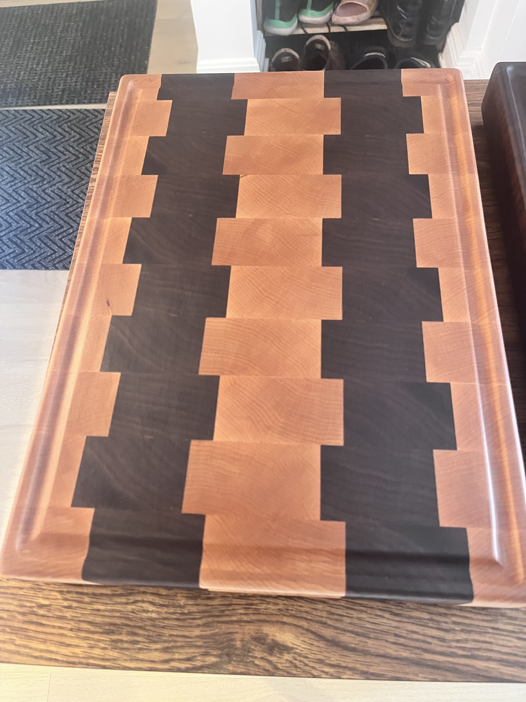
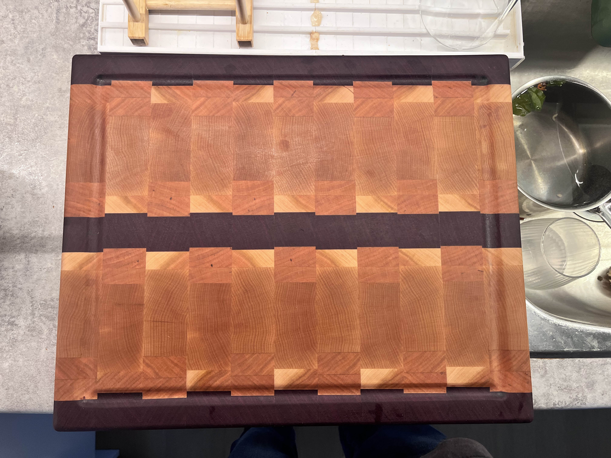
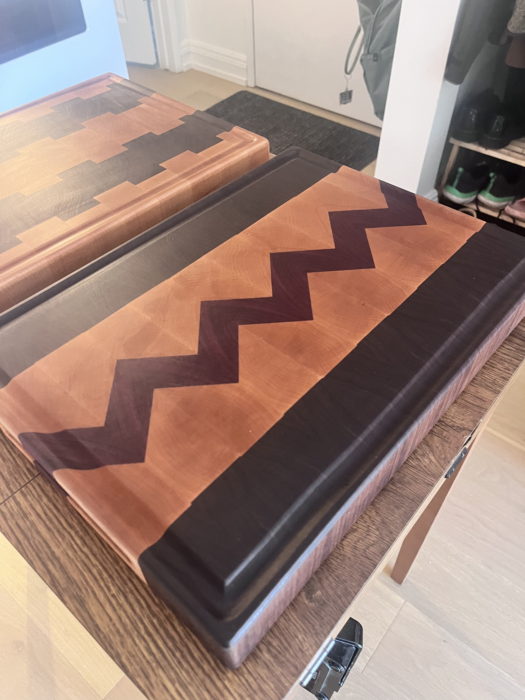

Butcher Blocks
Overview
A collection of charcuterie and cutting boards. The charcuterie boards are edge grain boards so they can be made thin and light weight while retainting their strength due to the direction of the wood fibers. The tradeoff being is they scratch easily, so they are mostly meant for serving food. The cutting boards are built to have the end grain as the cutting surface, making them much more scratch resistant. The tradeoff being they need to be made thicker so they do not crack. End grain boards are also more expensive to make since they require two glue ups rather than the one glue up for an edge grain board.



